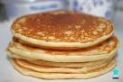

Receta de tortitas
Lista de la compra
- Harina de trigo
- Huevos
- Azúcar blanquilla
- Mantequilla
- Leche entera
- Esencia de vainilla
- levadura en polvo
- Sal fina
- Nata
- Sirope de fresa

Pasos a seguir
-
En un bol mezclamos los ingredientes secos, la harina, levadura, azúcar
y sal. Reservamos.
-
Combinamos en otro bol los huevos batidos, la mantequilla derretida y la
esencia de vainilla. Incorporamos los ingredientes secos y, con una
varilla incorporamos a los líquidos.
-
Vertemos la leche y batimos, es muy importante que no batamos demasiado
la mezcla. Se trata de integrarlos pero no es necesario intentar
eliminar todos los grumos. Si lo batimos en exceso los pancakes nos
quedarán demasiado duros.
-
Calentamos una sartén (debe ser aquella que tengamos para que no se
pegue las cosas, la de las tortillas o cosas a la plancha).
-
Cuando esté caliente añadimos un cucharón de la mezcla de las tortitas,
comenzando a verterlo por el centro y dejando que sea la propia masa la
que se redistribuya en la sartén. Es importante que regulemos la
temperatura hacia arriba o hacia abajo durante todo el proceso.
-
Si la masa no se cuaja al añadirla a la sartén estará demasiado fría y
si, por el contrario la parte inferior se quema antes de que aparezcan
burbujitas en la parte superior, estará demasiado caliente.
-
Cuando vemos que aparecen burbujas en la parte superior del pancake o
tortita es el momento de darle la vuelta con una espátula. Cocinamos el
pancake por el otro lado durante 30 o 40 segundos y retiramos.